Identita domu
Nárožní část dvojdomu se zkoseným nárožím a balkonem na nároží, obchod PROBST v suterénu/přízemí nároží; boční průčelí do vedlejší ulice; počet os není v dostupných dokladech jednoznačně doložen. Foto cp_1006,1019_001, cp_1006_001 (ulice), cp_1006_001__2, cp_1006_002 (boční/zadní s komínem), plán cp_1006_001 (L půdorys s křídlem).
Použité prameny: cp_1006_001 PLANE; cp_1006,1019_001 PLANE; cp_1006_001, cp_1006_001__2, cp_1006_002, cp_1006,1019_001/002 PHOTO; P-000936.
GIS: GIS id 1522 (278 m², 7 vrcholů) – poloha JZ nároží; popisek v GIS „1019“ (rozpor). V oblasti „Cs_Armady“ je dům veden podruhé se stejnými přílohami.
Prameny (12 příloh)
Všechny přílohy domu v databázi Libuše, každá otevřená a zapsaná v plan_search.json. Stav rešerše plánů: found; situační/střešní náčrt (ruční, nekótovaný, PLANE,BW) – není stavební výkres; půdorysné rozměry z GIS nebo odhad. Kliknutím otevřete větší náhled.

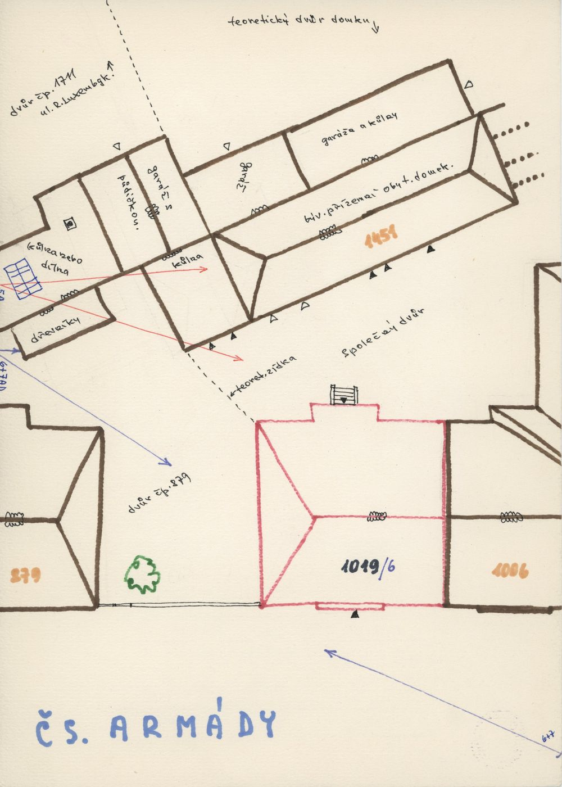
situační náčrt
SHA-256 d2d338dcec4e…

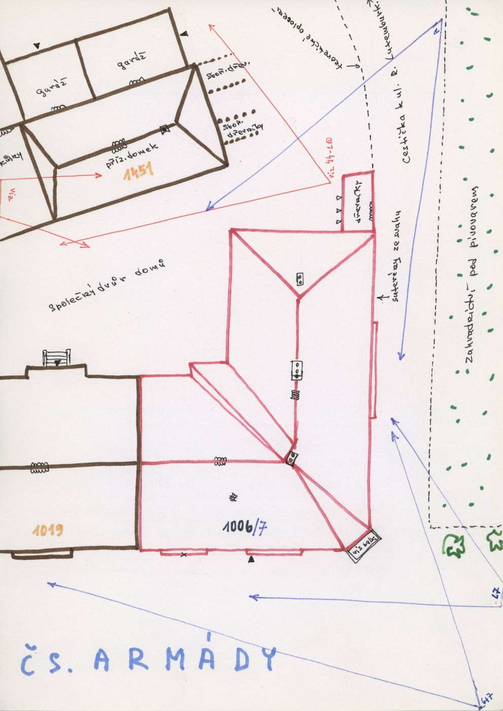
situační náčrt
SHA-256 c406bd7b64c4…

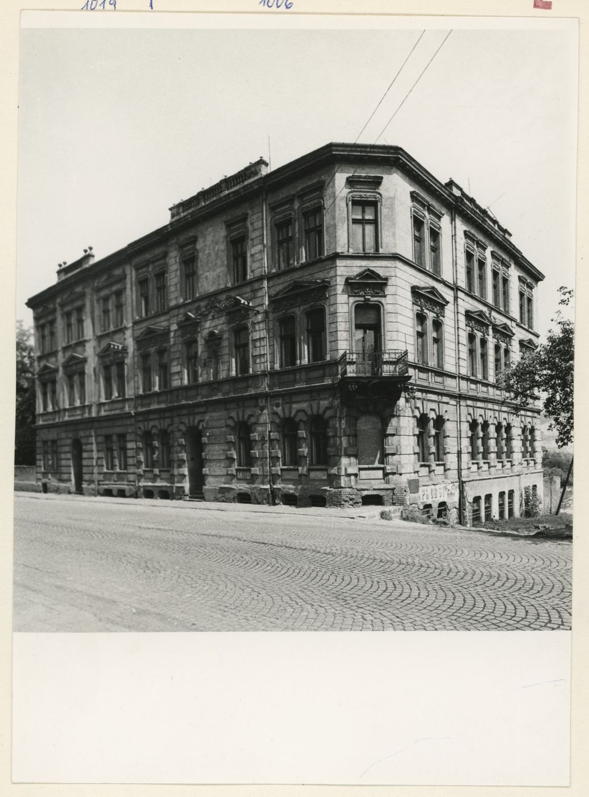
fotografie
SHA-256 37c5ee4cd478…

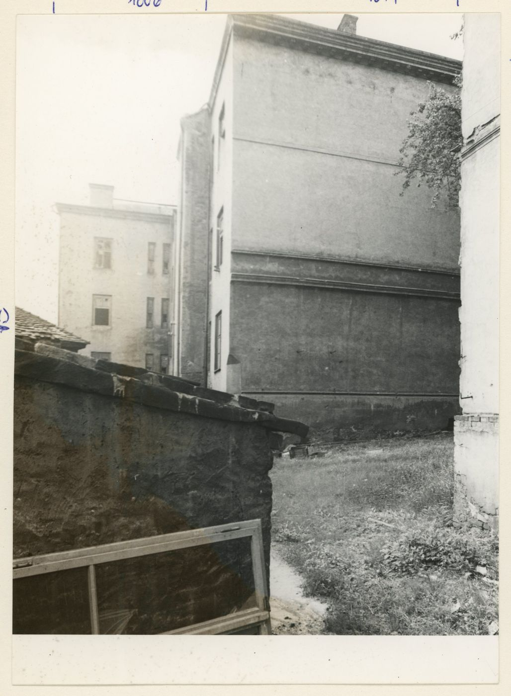
fotografie
SHA-256 30127c15e2c5…

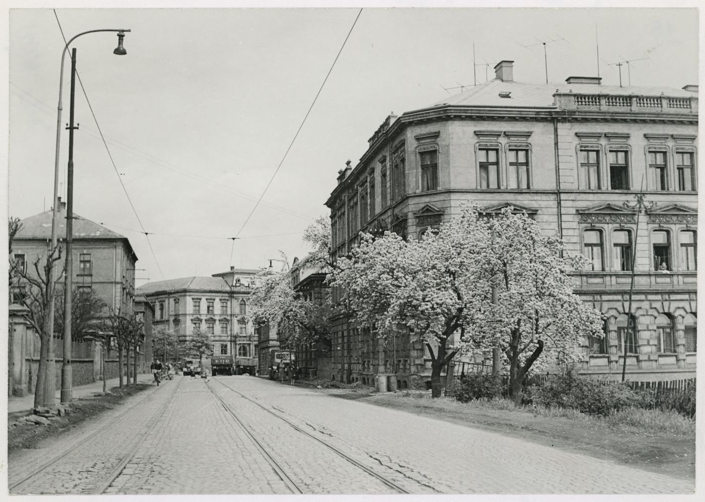
fotografie
SHA-256 45b2bc4a4823…

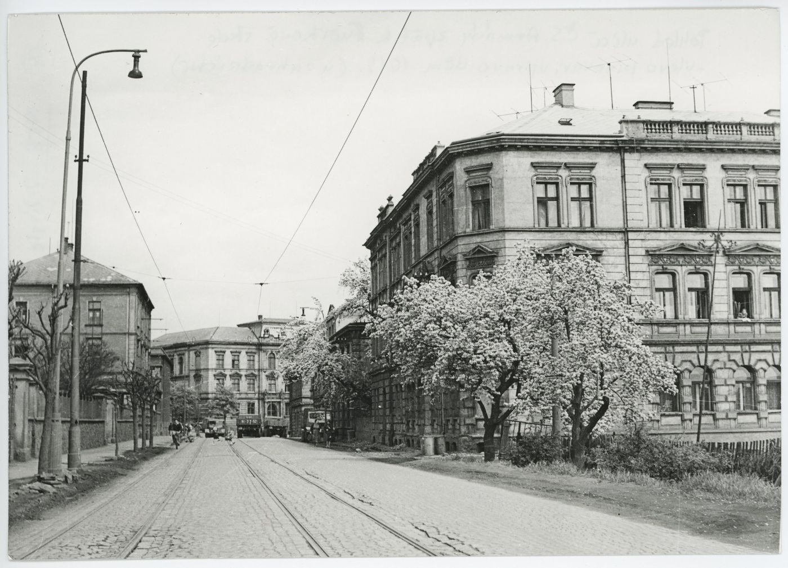
fotografie
SHA-256 2a3fb41f582d…

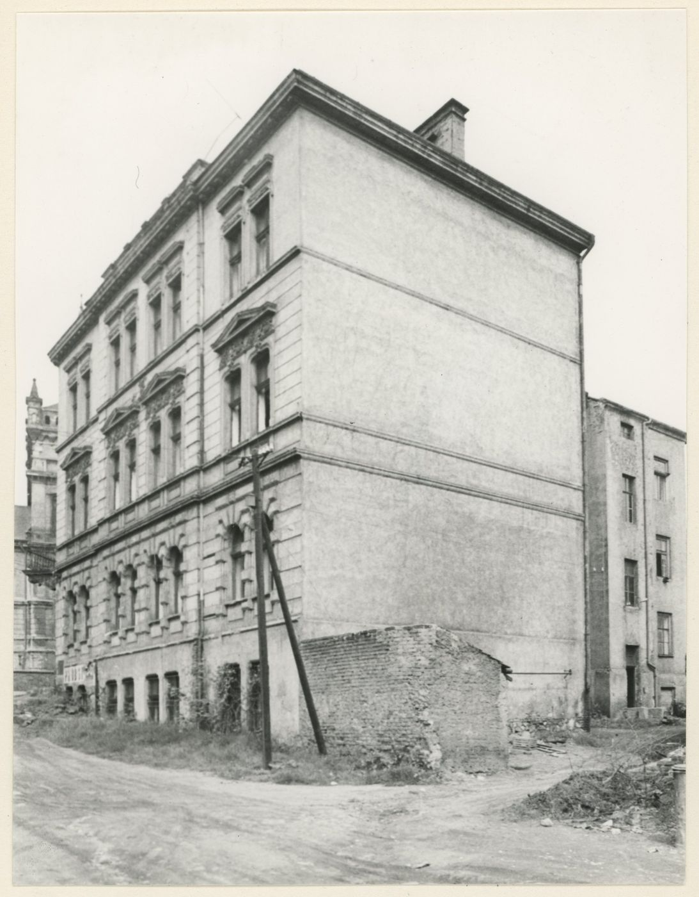
fotografie
SHA-256 92cac3fe9e3f…

pohlednice
SHA-256 6b5bb9495a95…

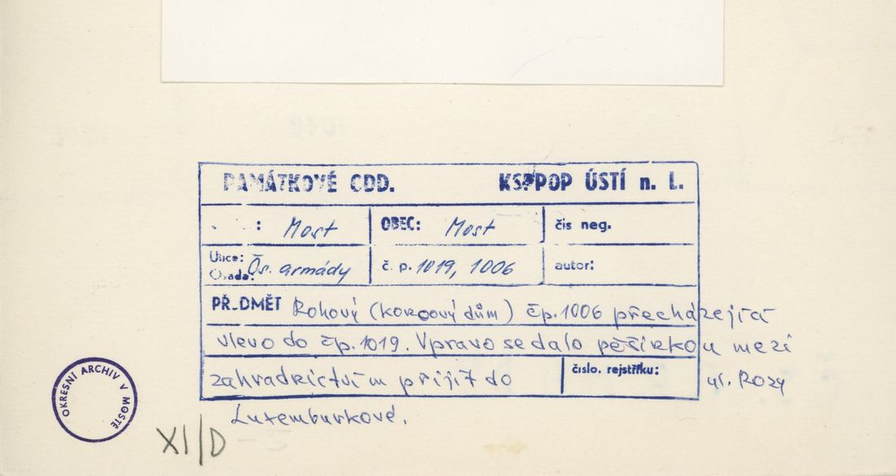
archivní karta (rub) · výřez textu
SHA-256 cd299f8c851f…

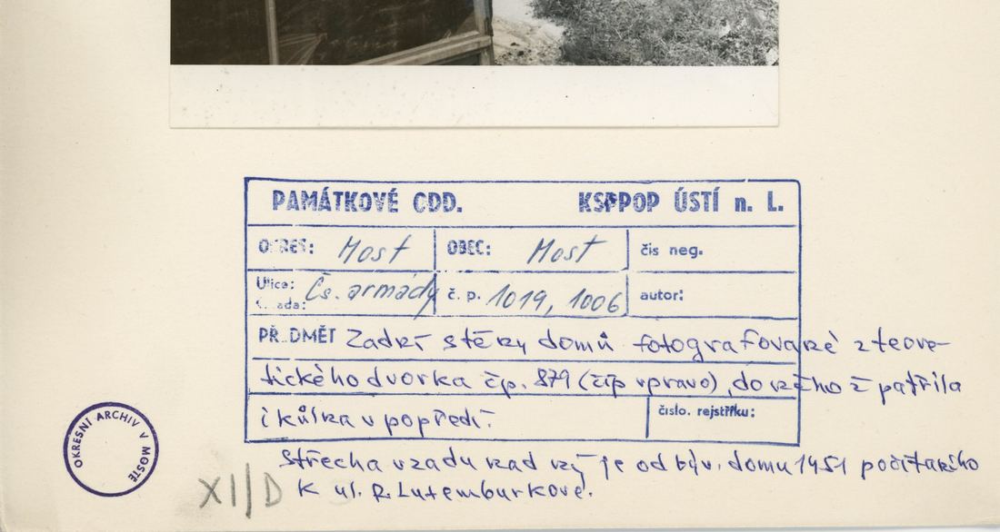
archivní karta (rub) · výřez textu
SHA-256 c021b4eb85a0…

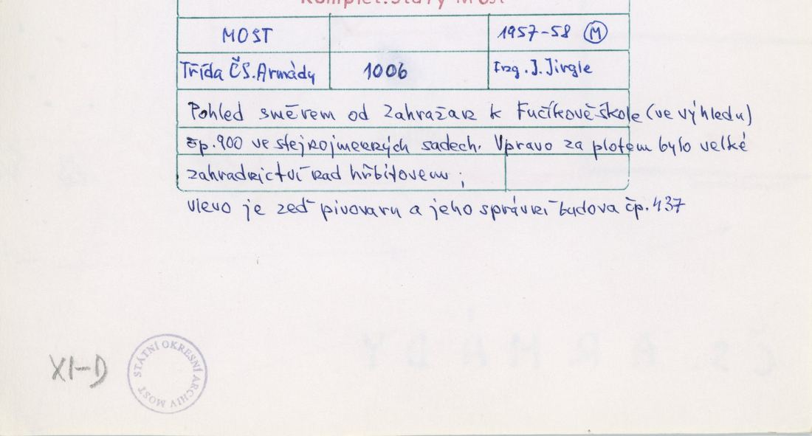
archivní karta (rub) · výřez textu
SHA-256 e303fbaaa319…

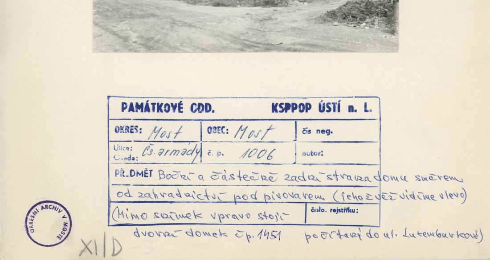
archivní karta (rub) · výřez textu
SHA-256 ffa560075f5c…
Model
| Revize modelu | r2 (zachované revize: r1, r2) |
|---|---|
| Poloha | GIS půdorys id 1522 |
| Šířka průčelí | 12,89 m |
| Výška okapu | 11,60 m (odhad) |
| Podlaží | 3 |
| Střecha podle pramenů | nízká valba |
| Střecha v modelu | valbová nad nepravidelným půdorysem (přímá kostra) |
| Otvory | 33 |
| Vikýře / vedlejší hmoty | 0 / 0 |
| Polygonů | 690 |
Zdroje rozměrů, jak jsou zapsány v plánu modelu
| Rozměry | GIS id 1522 polygon with chamfer 3.85 m and rear wing; archive label 1006 (GIS 1019 - conflict recorded) |
|---|---|
| Průčelí | photos cp_1006,1019_001 (corner with balcony, PROBST), cp_1006_002 (side/rear), cp_1006_001 street |
| Střecha | low hip, skeleton over the L-shaped polygon |
Kontrola: 10 povinných pohledů
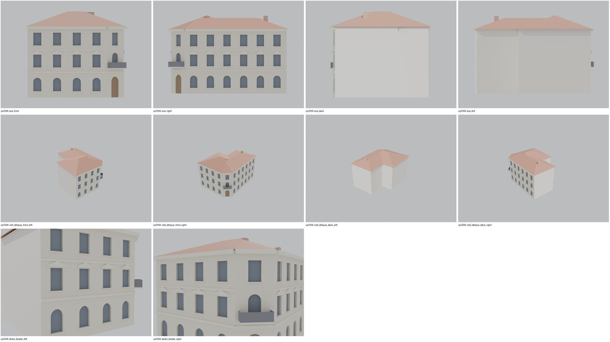
Nálezy
- r2 shodné s r1: skeletonová valba nad L půdorysem, zkosené nároží s balkonem a obloukovým vstupem, boční průčelí se šesti osami v modelu, frontony; historický počet os není v dostupných dokladech jednoznačně doložen
Opravy
- bez oprav
Hypotézy
Vše níže je model_hypothesis, provisional, locked: false.
- rozpor popisků GIS × archiv – provisional
- zkosené nároží v GIS není, modelováno podle foto
- výšky odhad
- GIS/archive label conflict
- shop PROBST in the chamfer simplified to an arched door
- all storey heights, opening sizes and roof pitches are estimates from photographs (model_hypothesis, provisional, locked=false)
Soubory
- Model čp. 1006, GLB
- Pracovní složka: F:\MOST\output\zatecka_street_claude_2026-10-17\houses\cp1006\
plan_search.json,geometry_plan.json,README.md,texture_handoff_spec.json,r2/cp_1006_G_r2.blend,r2/qa/qa_review.json